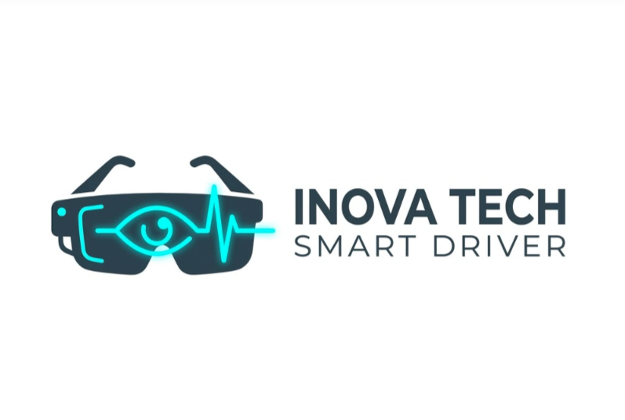

Frequência cardíaca ♡
NORMAL
72 BPM · estabilidade dentro dos parâmetros

Segurança em tempo real para operações industriais. Antecipe riscos, otimize eficiência e garanta um ambiente operacional protegido através de telemetria avançada e resposta imediata.
72 BPM · estabilidade dentro dos parâmetros
98% de foco operacional detectado
0.4 índice de risco · zona segura
Indicadores biométricos analisados instantaneamente em caso de desvios, permitindo agir antes que o risco escale.
Alertas inteligentes para equipes e veículos, integrando-se discretamente ao cockpit do veículo.
Algoritmos de machine learning identificam padrões antes que se tornem ocorrências.
Guia técnico passo a passo para instalação e operação do sistema InovaTech Smart Driver.
Processamento biométrico de alta precisão, conectado ao wearable e aos sensores do veículo.
STATUS DO SISTEMA
● OPERACIONAL
Insira o dispositivo, verifique o LED de conexão e aguarde a sincronização.
Conecte a unidade à rede e confirme o pareamento com os sensores.
Execute o teste de calibração para iniciar o monitoramento preciso.
Confira os indicadores vitais e o mapa de risco no painel do veículo.
| Módulo | Descrição técnica | Quantidade | Custo unitário |
|---|---|---|---|
| INVT-S2-P2 | Processador de telemetria wearable | 01 | R$ 150,00 |
| Raspberry Pi 4 | Unidade de processamento central | 01 | R$ 450,00 |
| Sensores IA & ECG | Monitoramento biométrico | 01 | R$ 200,00 |
| Estrutura 3D & Case | Design ergonômico industrial | 01 | R$ 100,00 |
| Cabos & acessórios | Conectividade e energia | 01 | R$ 50,00 |